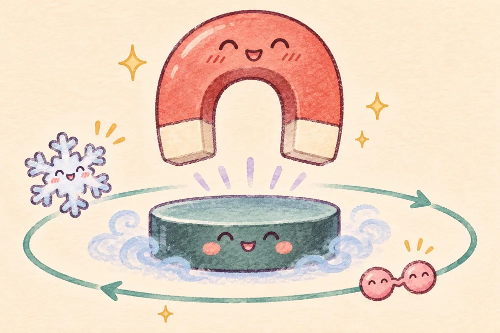

A well-understood starting point
Conventional superconductors
Electrons form pairs, helped by vibrations of the atoms. This provides a successful explanation for many superconducting materials.
Bachelor’s & Master’s projects / Superconductors
Why can electricity flow without resistance? Explore the quantum world of superconductors—and the patterns and waves that may help us understand it.
A curious mind is a good place to start.
01 / The idea in a minute
In an ordinary wire, electrical resistance turns some energy into heat. Cool a superconductor below its transition temperature and its DC electrical resistance drops to zero.
Its magnetic behaviour changes too. Magnetic field can be pushed out of its interior—the Meissner effect. Under the right conditions, a magnet can even float above it.
How can countless electrons create one shared quantum state? And why do some materials do this at much higher temperatures than others?

A well-understood starting point
Electrons form pairs, helped by vibrations of the atoms. This provides a successful explanation for many superconducting materials.
Open questions to explore
Families such as cuprates and nickelates bring harder questions. Magnetism, electron interactions and charge patterns offer clues, but the full story is still being worked out.
Try a little cooling
Move the temperature slider. This example material has a transition temperature, T c , of 90 K .
Above the example transition temperature, the material has electrical resistance. Move the slider below 90 K to see the idealised change.
An idealised teaching model, not a measurement of a specific material. The transition is drawn sharp; real data can be broader. The normal-state resistance scale is arbitrary.
02 / The questions we ask
Superconductivity lives alongside other remarkable forms of behaviour.
Charge order: electrons can form a repeating pattern of higher and lower density. How does that pattern relate to superconductivity?
Spin waves: the tiny magnetic moments of electrons can move collectively. Comparing these waves in cuprates and nickelates reveals clues about electron interactions.
Strain and magnetic field: a small squeeze or an applied field can change the balance between different states. We watch what responds—and what does not.
Tools for the detective work
RIXS measures the energy exchanged by X-rays to probe vibrations and magnetic excitations. Diffraction reveals atomic structure and repeating order.
03 / Your possible project
Start with one clear question and learn the tools as you go.
Study atomic vibrations or spin waves in RIXS data. Ask what their behaviour tells us about interactions inside a superconducting material family.
Excitations · Data analysisTrack a selected peak in existing spectra and compare its energy or width across a small dataset.
Compare related materials or conditions, using models to test a focused question about their interactions.
Apply strain—a small stretch or compression—or study measurements in a magnetic field. See how charge order, structure or superconductivity responds.
Strain · Magnetic field · OrderAnalyse one temperature, field or strain series, with a clear and limited comparison.
Help design and carry out a tuning experiment, then connect changes in structure or charge order with other measurements.
Electrons can form repeating charge patterns, and atoms can shift slightly. Use diffraction and structure refinement to look for these changes.
Charge order · Crystal structureFollow a diffraction peak or refine an existing structure at a few measurement conditions.
Map structural or charge-order changes across several conditions and test their relationship to superconductivity.
These are ideas to discuss. The material, methods and scope will be chosen with your supervisor to suit a Bachelor’s or Master’s thesis.
04 / A real research example

In our LESCO study, we separated overlapping signals from vibrations and charge motion. This let us follow a weak electronic feature whose energy changes with momentum.
A student project could start with this kind of detective work: fit the peaks, check the uncertainties, and find out which conclusions the data support.
Explore the study ↗Go a little deeper
These are research papers and resources, so they go beyond the short explanations above.
Visuals: AI-generated banner painting and concept illustration; these are artistic impressions. Research figure: Xunyang Hong and collaborators; local copy from the research showcase. Schematic demos are for explanation, not measured data.
Your next step
Come by the office Y36 H50 , look for Johan Chang and discuss a potential project. Bring your questions, your interests, or simply your curiosity.
We can shape the scope around a Bachelor’s or Master’s thesis and your experience.
Physik-Institut · Irchel campus
Winterthurerstrasse 190, Zürich